09Ideen für Papier
40 Stickerfür alles, was rausgeht.
Für die Box mit dem Absacker, das Glas, die Tüte vom Pop-up und das Notizbuch der Gäste: 40 Ideen, rund, eckig und gestanzt.
01Die Sticker
Vierzig Sticker.
Das C aus Rudis Wortmarke, die Wortmarke selbst, Rudis Zeilen, seine Plakate ganz, Sätze der Bar, Dirty Chicken und die Farben eurer Abende.
Das C in Kerze
Rund, 46 mm. Das C aus Rudis Wortmarke.
46 auf 46 mmMondtänzerin
Gestanzt, 74 mm hoch. Die Mondtänzerin aus Rudis Plakat vom September 2026, freigestellt.
55 auf 74 mmLAUCH / BLUMENKOHL / CHIPOTLE
Kapsel, 100 mm. Rudis Teller, wie er ihn schreibt.
100 auf 22 mmMomo und Rudi
Gestanzt als Siegel, 56 mm. Die beiden Namen rundherum, in der Mitte das C.
56 auf 56 mmTicket November
Gestanzt als Ticket, 80 auf 40 mm, mit Lochung und Abriss.
80 auf 40 mmIch war an der langen Tafel
Rund, 56 mm. Mit Feld für den Datum-Stempel des Abends.
56 auf 56 mmPlakat: Tanz auf dem Mond
Eckig, 60 mm. Rudis Plakat ganz, mit schmalem Rand.
60 auf 60 mmWalk on the Wild Side
Kapsel, 90 mm. Die Bar, in der die Tafel steht.
90 auf 26 mmPanther auf dem Thron
Gestanzt, 60 mm hoch. Aus Rudis Plakat vom Februar 2025, freigestellt.
59 auf 60 mmDirty Chicken
Rund, 56 mm. Das D mit dem Hühnerfuss auf Violett.
56 auf 56 mm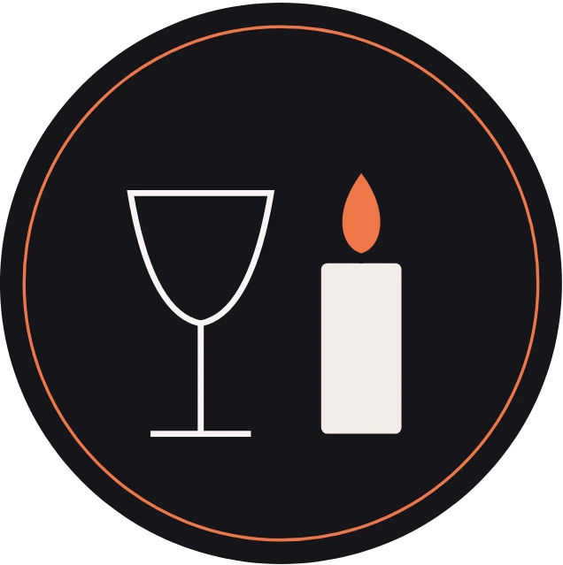
Glas und Kerze
Rund, 56 mm. Ein Glas und eine Kerze, wie auf der Tafel.
56 auf 56 mm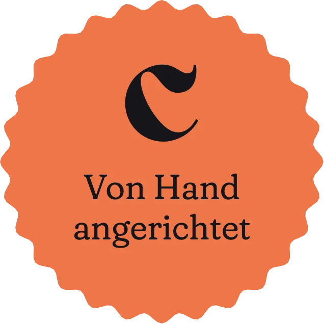
Von Hand angerichtet
Gestanzt als Siegel, 56 mm.
56 auf 56 mmBLUMENKOHL / ROQUEFORT / KAPERN / QUINOA
Kapsel, 100 mm. Rudis Teller.
100 auf 30 mmDas C auf der Nacht
Rund, 40 mm.
40 auf 40 mm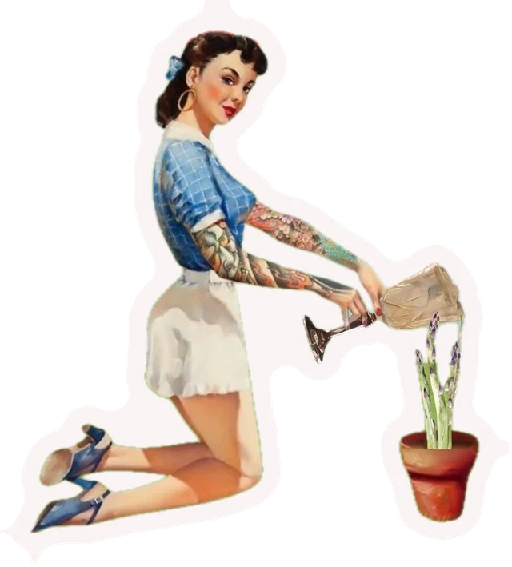
Gärtnerin
Gestanzt, 70 mm hoch. Aus Rudis Plakat vom Juni 2025, freigestellt.
63 auf 70 mm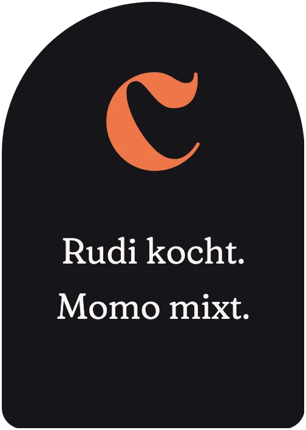
Rudi kocht. Momo mixt.
Gestanzt als Schild mit Bogen, 44 auf 62 mm.
44 auf 62 mm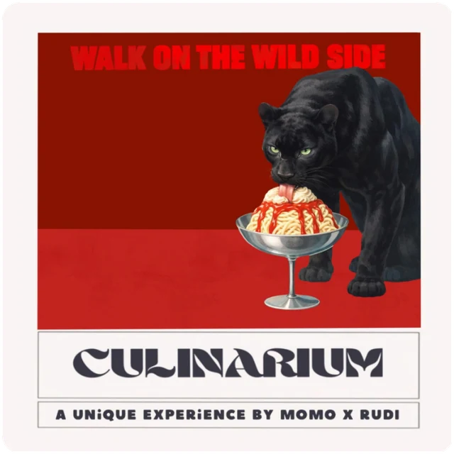
Plakat: Panther und Spaghetti-Eis
Eckig, 60 mm.
60 auf 60 mmDirty Food & Dirty Drinks
Kapsel, 90 mm.
90 auf 30 mm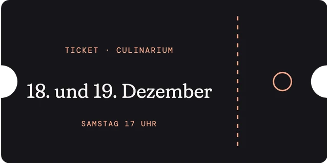
Ticket Dezember
Gestanzt als Ticket, 80 auf 40 mm, mit Lochung.
80 auf 40 mm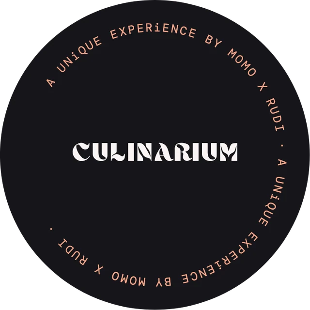
Wortmarke im Kreis
Rund, 64 mm. Rudis Wortmarke, rundherum die Zeile der Plakate.
64 auf 64 mm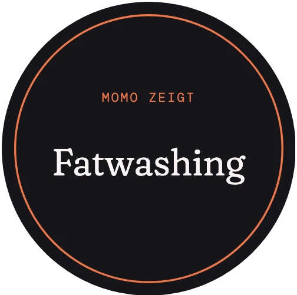
Fatwashing
Rund, 44 mm. Eine von Momos Techniken.
44 auf 44 mm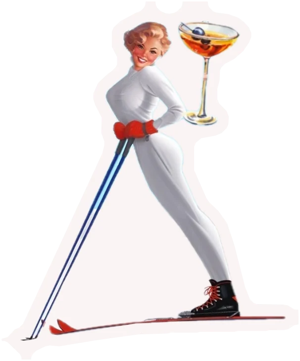
Skifahrerin
Gestanzt, 64 mm hoch. Aus Rudis Plakat vom November 2024, freigestellt.
53 auf 64 mm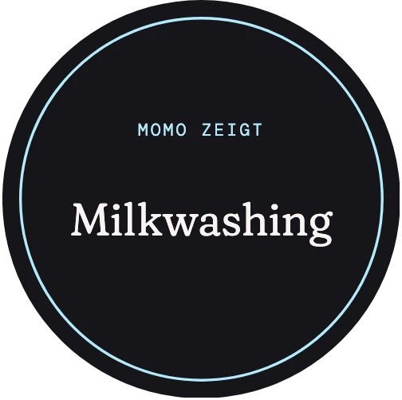
Milkwashing
Rund, 44 mm. Eine von Momos Techniken.
44 auf 44 mm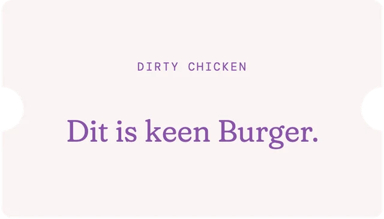
Dit is keen Burger.
Gestanzt als Ticket, 70 auf 40 mm.
70 auf 40 mm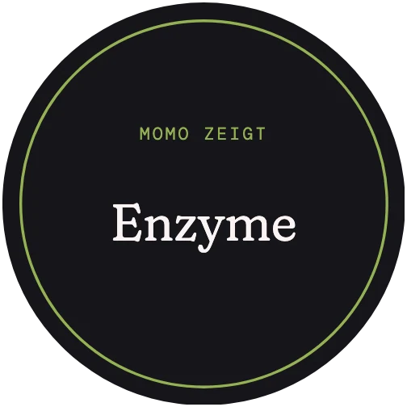
Enzyme
Rund, 44 mm. Eine von Momos Techniken.
44 auf 44 mm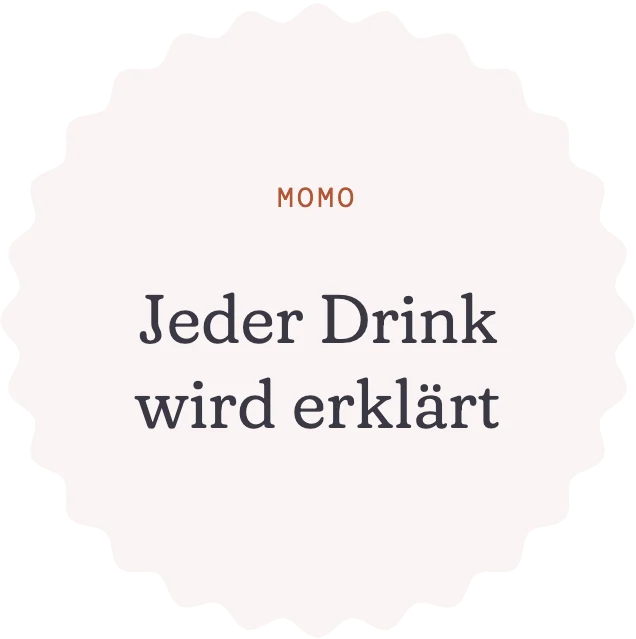
Jeder Drink wird erklärt
Gestanzt als Siegel, 56 mm.
56 auf 56 mm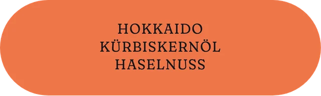
HOKKAIDO / KÜRBISKERNÖL / HASELNUSS
Kapsel, 100 mm. Rudis Teller.
100 auf 30 mm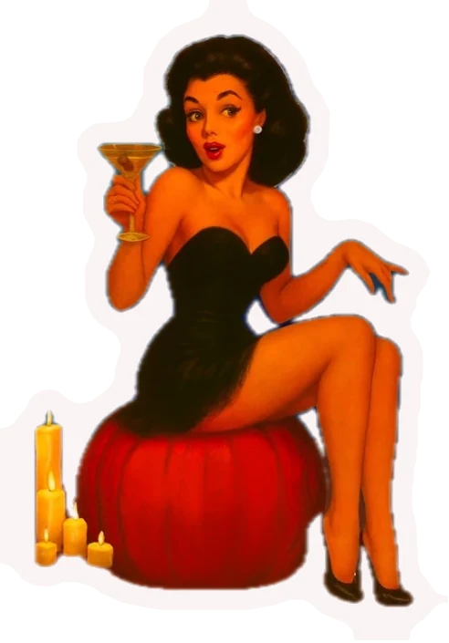
Kürbis bei Kerzen
Gestanzt, 62 mm hoch. Aus Rudis Plakat vom November 2025, freigestellt.
43 auf 62 mm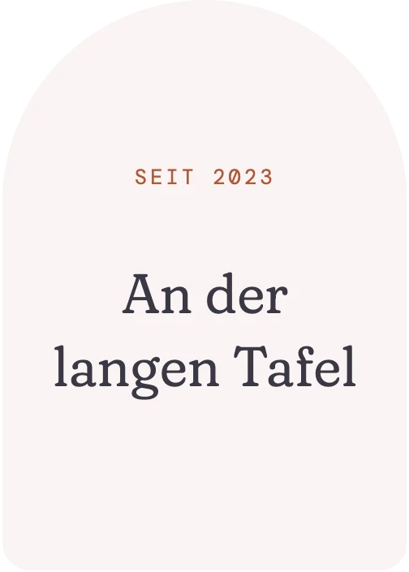
An der langen Tafel
Gestanzt als Schild mit Bogen, 44 auf 62 mm.
44 auf 62 mm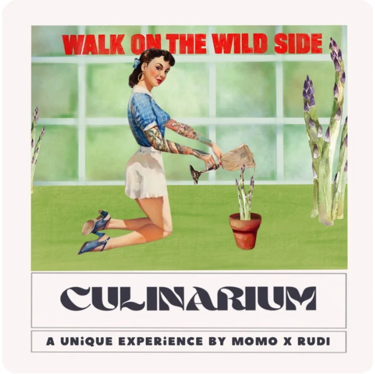
Plakat: Spargel im Gewächshaus
Eckig, 60 mm.
60 auf 60 mm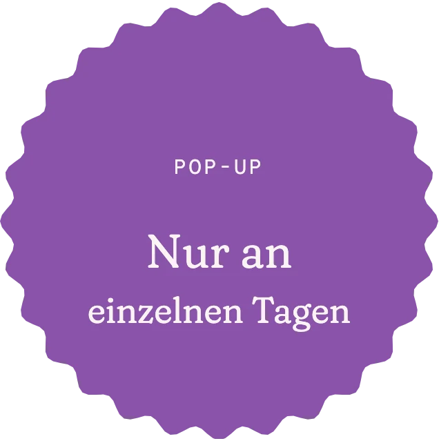
Nur an einzelnen Tagen
Gestanzt als Siegel, 56 mm.
56 auf 56 mmDas C auf Warmweiss
Rund, 40 mm.
40 auf 40 mm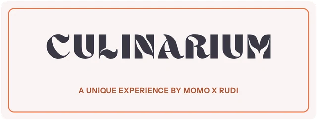
Wortmarke mit Zeile
Eckig, 90 auf 34 mm.
90 auf 34 mm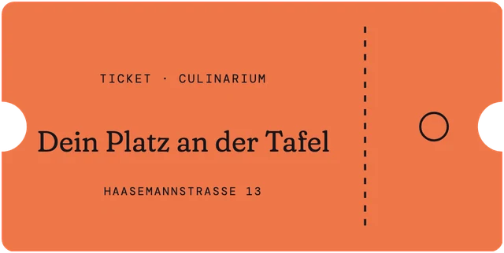
Ticket Platz
Gestanzt als Ticket, 80 auf 40 mm, mit Lochung.
80 auf 40 mm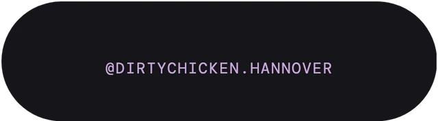
@dirtychicken.hannover
Kapsel, 80 mm.
80 auf 22 mmSPAGHETTI-EIS / KIWI / WEISSE SCHOKOLADE
Kapsel, 100 mm. Rudis Teller.
100 auf 30 mm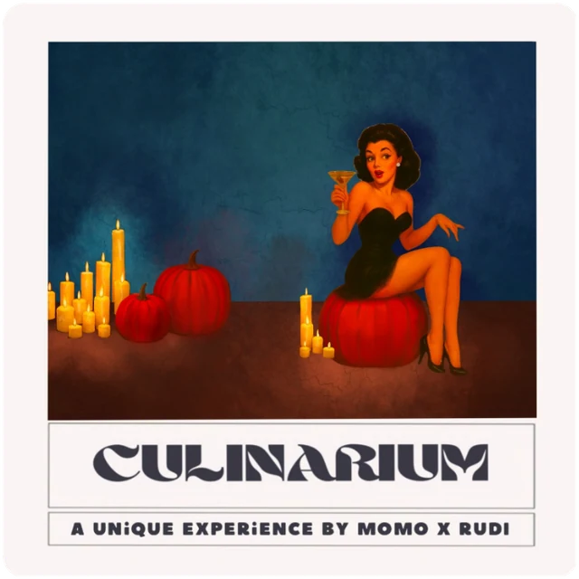
Plakat: Kürbis bei Kerzen
Eckig, 60 mm.
60 auf 60 mm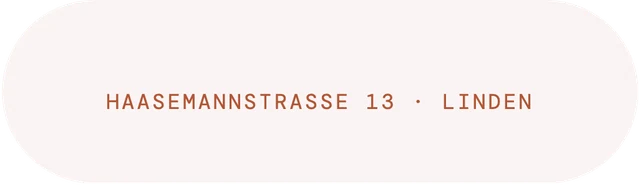
Haasemannstrasse 13
Kapsel, 90 mm.
90 auf 26 mm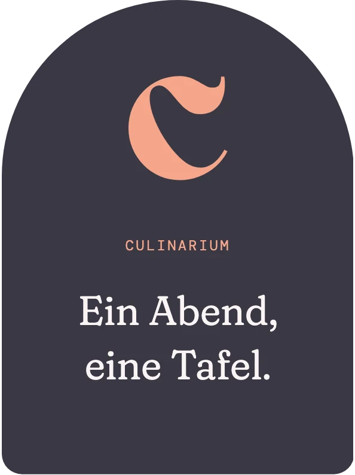
Ein Abend, eine Tafel.
Gestanzt als Schild mit Bogen, 52 auf 70 mm.
52 auf 70 mm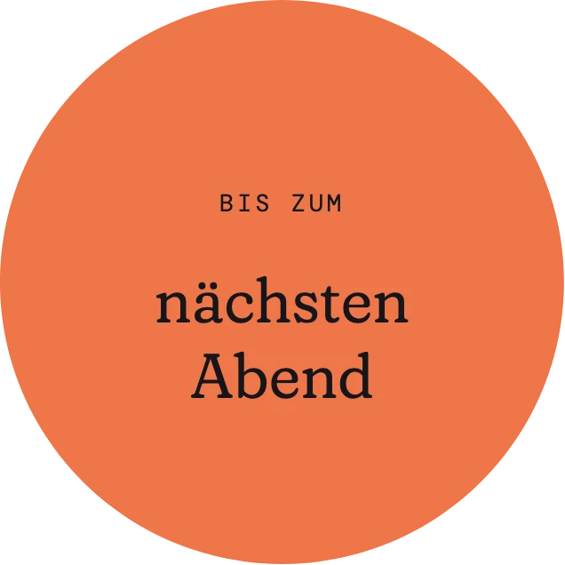
Bis zum nächsten Abend
Rund, 56 mm. Zum Abschied, auf die Tüte oder die Box.
56 auf 56 mm
02Für die Druckerei
Der Druckbogen.
Alle Sticker liegen in Originalgröße auf drei Bögen im Format A3, mit einer Schnittlinie je Stück. Dazu gibt es jedes einzeln als PDF.
40 Sticker · 22 bis 100 mm · Schnittlinie in Magenta
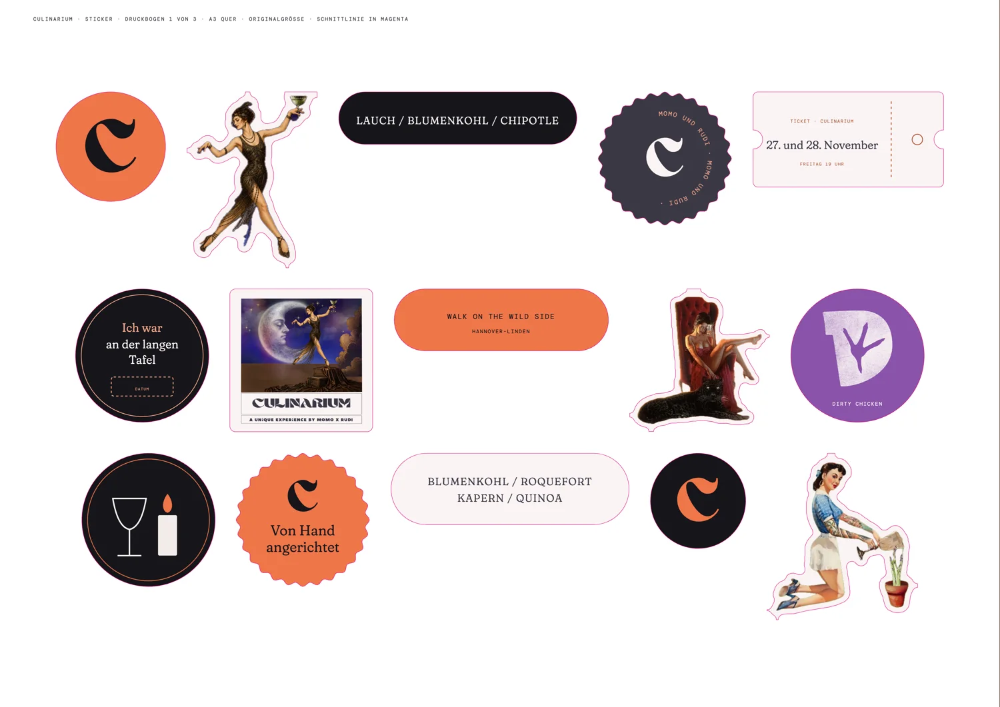
Dazu gibt es 24 Drucksachen und eure Unterlagen im selben Stil.